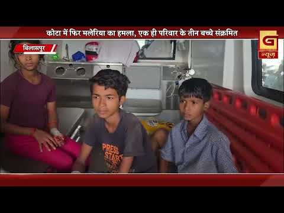
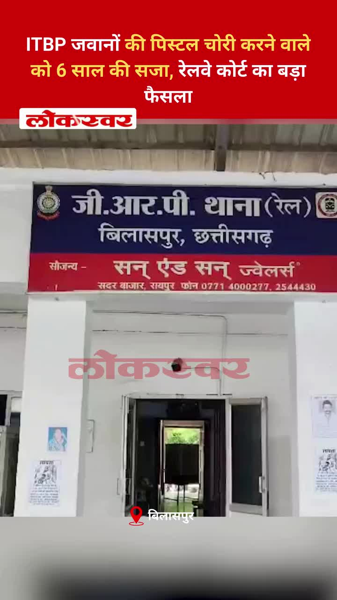
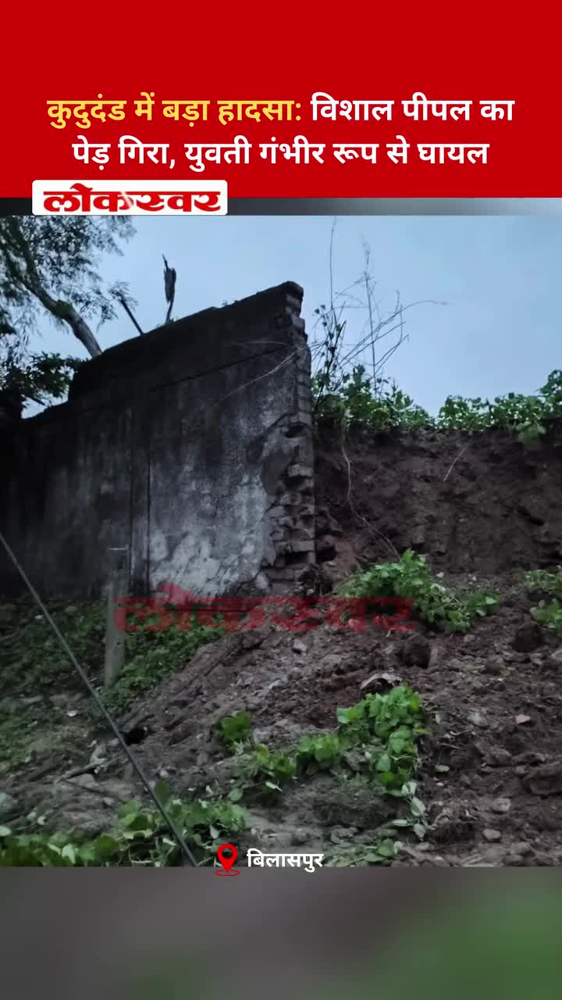
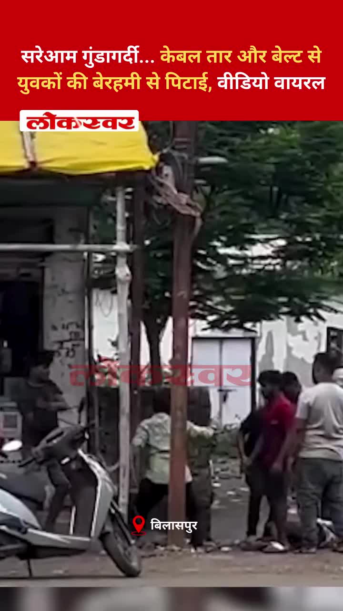
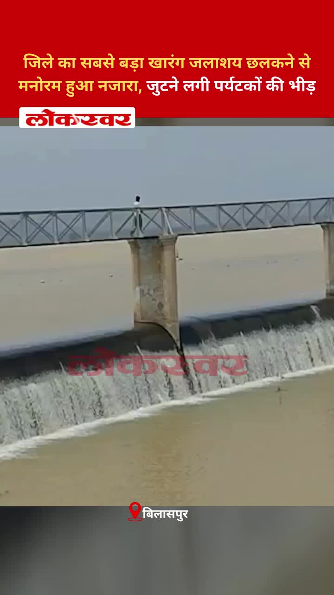
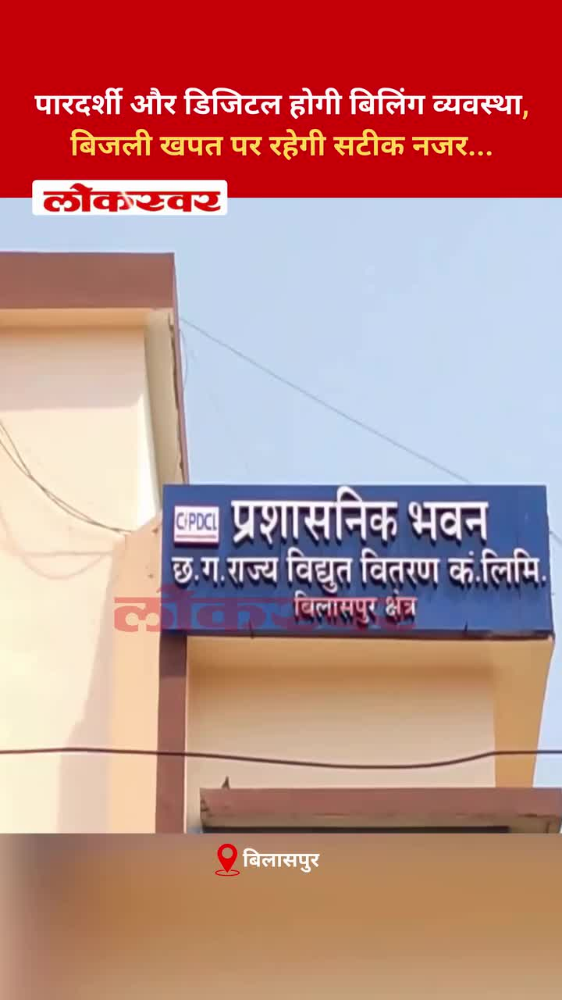
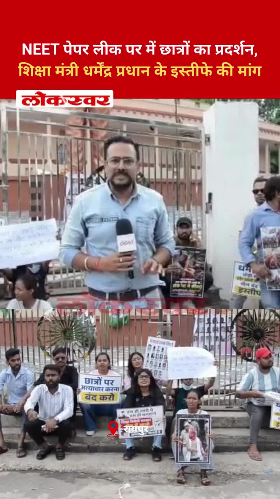
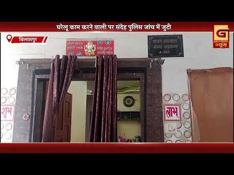
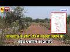

Bilaspur News Hub
3
EDUCATION
6
EVENT
6
GOVERNMENT
7
HEALTH
4
INFRASTRUCTURE
15
INSTAGRAM NEWS
21
NEWS
5
OTHER
10
POLICE
1
RAILWAY
2
SOCIAL
16
YOUTUBE VIDEOS
EDUCATION3

CG Wall · Published: Thu, 23 Ju | Scraped: 2026-07-23 15:55:22
Joint Director A.K. Bhardwaj conducted surprise school inspections and issued notices to absent teachers, warning salary deductions. The move aims to boost attendance and accountability in Bilaspur’s schools.

Lokswar · Published: Thu, 23 Ju | Scraped: 2026-07-23 15:55:22
पश्चिम बंगाल के पुरुलिया में आयोजित CBSE ताइक्वांडो चैंपियनशिप में बिलासपुर के डिफेंस ताइक्वांडो क्लब ने उत्कृष्ट प्रदर्शन करते हुए चार पदक जीते। शिवांगी सिंह को उनके शानदार प्रदर्शन के लिए सर्वश्रेष्ठ खिलाड़ी का खिताब दिया गया।

Guru Ghasidas Vishwavidyalaya · Published: 2026-07-24 | Scraped: 2026-07-24 13:18:22
The university has launched its official English website, offering information on courses, admissions, and administrative services. It aims to improve accessibility for students and staff.
EVENT6

Nai Dunia Bilaspur · Published: Fri, 24 Ju | Scraped: 2026-07-24 05:05:05
The Shri Ram Shraddha Yatra will be organized in Bilaspur from July 25 to 27 to honor Bhanja Shri Ram. Devotees will dispatch coconuts to Ayodhya as part of the pilgrimage. The event seeks to promote cultural unity.

Lokswar · Published: Fri, 24 Ju | Scraped: 2026-07-24 15:26:56
A massive rock fell on a vehicle in Himachal Pradesh's Lahul-Spiti district, killing 13 people. Rescue teams are working to extract survivors and clear debris.
The Hitavada · Scraped: 2026-07-24 11:36:51
The Wankhede team will captain Maharashtra in the upcoming junior hockey nationals, marking a significant opportunity for the city. This event highlights the growing hockey talent in the region and aims to boost youth participation.
The Hitavada · Scraped: 2026-07-24 11:36:51
Janvi scored two crucial goals, leading Pragatiks to victory in the title contest. Her performance showcased her skill and determination, securing the team's success.

The Hitavada · Scraped: 2026-07-24 08:10:21
The city will host the Akhil Bharatiya Swasthya Aayam Prashikshan Varg starting 25th, bringing together health professionals. The event aims to share best practices and promote community health initiatives.
G News Bilaspur · Published: 2026-07-24 | Scraped: 2026-07-24 13:18:22
Lord Jagannath returned to his temple after nine days amid festive Bahuda Yatra celebrations, drawing large crowds of devotees. The event marked a joyous conclusion to the religious festivities.
GOVERNMENT6
.jpg)
Nai Dunia Bilaspur · Published: Fri, 24 Ju | Scraped: 2026-07-24 13:18:22
A snake‑bite compensation scam has implicated several Simhs doctors, prompting possible disciplinary action, while a forensic expert has taken an extended leave. The case highlights alleged malpractice in claim processing.

Lokswar · Published: Fri, 24 Ju | Scraped: 2026-07-24 15:26:56
In Bilaspur, a road and drainage system were constructed on government land without permission, yet authorities have taken no action despite a month‑long complaint. Residents demand strict enforcement against illegal construction.
Lokswar · Published: Fri, 24 Ju | Scraped: 2026-07-24 15:26:56
The central government and CJP representatives met at Constitution Club in New Delhi and agreed on two key demands. The discussion aimed to address concerns and find common ground. The outcome is expected to impact policy and judicial cooperation.

The Hitavada · Scraped: 2026-07-24 08:10:21
The district collector has terminated the lease agreement with VHA, citing violations. The decision follows a routine inspection and aims to ensure proper land use.
G News Bilaspur · Published: 2026-07-24 | Scraped: 2026-07-24 13:18:22
Chief Minister Vishnu Deo Sai ordered strict action on the NEET paper leak to prevent cheating and ensure fair exams. The government will take concrete steps to safeguard exam integrity.
G News Bilaspur · Published: 2026-07-23 | Scraped: 2026-07-23 15:55:22
Congress party staged a protest in Tifra against alleged exam irregularities and the subsequent action taken against students. The demonstration highlights concerns over fairness in the examination process.
HEALTH7

CG Wall · Published: Thu, 23 Ju | Scraped: 2026-07-23 15:55:22
A patient with a 24‑year‑old locked jaw received successful surgery at Bilaspur’s SIMS hospital, restoring hope in public healthcare. The operation showcases the hospital’s improved capabilities.

Nai Dunia Bilaspur · Published: Fri, 24 Ju | Scraped: 2026-07-24 08:10:21
कोटा के वनग्राम औरापानी में मलेरिया का प्रकोप फैल गया है, जिससे एक ही परिवार के तीन सदस्य संक्रमित हो गए हैं। स्वास्थ्य विभाग ने नियंत्रण उपाय शुरू कर दिए हैं।

Nai Dunia Bilaspur · Published: Fri, 24 Ju | Scraped: 2026-07-24 11:36:51
The new blood center at Bilaspur SIMS Super Specialty Hospital will enhance blood availability and patient care. It marks a significant advancement in Chhattisgarh's public health infrastructure.

Nai Dunia Bilaspur · Published: Fri, 24 Ju | Scraped: 2026-07-24 15:26:56
Doctors at Bilaspur SIMS successfully performed surgery to open the jaw of a 24-year-old man who had been unable to open his mouth since birth. The rare procedure restored his ability to eat and speak, marking a significant medical breakthrough.

The Hitavada · Scraped: 2026-07-24 08:10:21
Despite being unsafe, the mental hospital continues to treat patients as redevelopment remains stalled. Concerns grow over patient safety and the need for immediate structural repairs.

The Hitavada · Scraped: 2026-07-24 08:10:21
NSCBMC surgeons have introduced an ultra‑affordable technique for breast cancer surgery, making treatment accessible to low‑income patients. The method reduces costs while maintaining high success rates.

G News Bilaspur · Published: 2026-07-24 | Scraped: 2026-07-24 13:18:22
Three children from Aurapani village in Kuta have been diagnosed with malaria, prompting health alerts. Local health officials have initiated preventive measures and urged residents to take precautions against mosquito bites. The situation is being monitored closely to contain the outbreak.
INFRASTRUCTURE4

Nai Dunia Bilaspur · Published: Fri, 24 Ju | Scraped: 2026-07-24 05:05:05
A critical overbridge on NH‑49 collapsed, trapping several buses and an ambulance and creating massive traffic congestion between Raipur and Raigarh. Emergency crews are working to clear debris and rescue passengers. Authorities have diverted traffic and started repairs.

CG Wall · Published: Fri, 24 Ju | Scraped: 2026-07-24 13:18:22
After a 12‑year hiatus, the traffic department resumed enforcement in Ramanganj, reinstating road discipline following the collector’s strict orders. Local commuters welcomed the return of traffic regulation.

The Hitavada · Scraped: 2026-07-24 08:10:21
Heavy rains have revealed poor-quality pothole repairs on city roads, posing hazards to commuters. Authorities have been urged to redo the work promptly.
G News Bilaspur · Published: 2026-07-23 | Scraped: 2026-07-23 15:55:22
The Minamata Bango dam is expected to release water, prompting safety alerts for people living along the Hasdeo River. Residents are advised to stay vigilant and follow official instructions to avoid any risk.
INSTAGRAM NEWS15
The Raipur–Bilaspur Expressway will provide a 4/6 lane tolled corridor connecting the two major cities. It aims to cut travel time and boost regional trade. Construction is ongoing with an expected near‑term completion.
The post emphasizes that disagreements are natural but should not harm friendships. It encourages expressing views respectfully without forcing them on others, resonating with many social media users.
The accused befriended a young woman on Instagram, used a malicious APK to hack her phone, and blackmailed her. Authorities in Raigarh have arrested him, highlighting concerns over cyber fraud.

A railway court in Bilaspur sentenced a man to six years imprisonment for stealing an ITBP jawan's pistol, emphasizing strict action against weapon theft.

A massive peepal tree collapsed in Kududand, striking a young woman and causing serious injuries, highlighting the need for regular tree maintenance in public areas.

A video shows two youths being mercilessly beaten with cable wires and belts in a public area, sparking outrage and calls for stricter law enforcement.

The overflow of Bilaspur's largest reservoir, Kharang, created a scenic sight and drew crowds of tourists. Authorities note the natural beauty is boosting local tourism and visitor numbers.

A new digital billing system using smart meters will make electricity billing transparent and allow precise consumption tracking. This move aims to improve accuracy and reduce disputes for consumers.
Malaria outbreak in Aurapani village of Kota prompted mass medicine distribution to households. Health officials are conducting surveys and fogging to control the spread and protect residents.

Students in Raipur protested demanding Education Minister Dharmendra Pradhan's resignation over a NEET paper leak. The demonstration highlights growing concerns about exam integrity and accountability.

The post emphasizes that cleanliness defines healthy and prosperous villages, highlighting the Swachh Bharat Mission (Rural). The state advisor stresses hygiene as key to rural development.
It is a repost from the official Bilaspur district Instagram account. It likely shares community updates or events for the local audience.
Heavy rainfall in Bilaspur caused water to inundate the tehsil and SDM office, disrupting revenue department operations. The flooding impacted hundreds of files and official records, prompting emergency response measures.
The post appears to be a repost with no additional content. It simply credits the original source, @bilaspurdist. No further details are available.
The quote stresses that spreading knowledge promotes cleanliness and dispels ignorance. It underscores education’s role in improving sanitation, especially in areas like Korba, Chhattisgarh.
NEWS21

CG Wall · Published: Thu, 23 Ju | Scraped: 2026-07-23 17:15:53
बिलासपुर… सड़क हादसों को केवल चालान और कार्रवाई से नहीं, बल्कि लोगों की आदत बदलकर रोकने की दिशा में बिलासपुर यातायात पुलिस ने नई पहल शुरू की है। अब शहर की प्रमुख सड़कों और आंतरिक मार्गों पर जगह-जगह गति सीमा दर्शाने वाले संकेतक बोर्ड लगाए जा रहे हैं, ताकि वाहन चालक पहले से जान सकें कि …

The Hitavada · Scraped: 2026-07-24 11:36:51

The Hitavada · Scraped: 2026-07-24 11:36:51
The Hitavada · Scraped: 2026-07-24 11:36:51

The Hitavada · Scraped: 2026-07-24 11:36:51
The Hitavada · Scraped: 2026-07-24 11:36:51
The Hitavada · Scraped: 2026-07-24 08:10:21
The Hitavada · Scraped: 2026-07-24 08:10:21
The Hitavada · Scraped: 2026-07-24 08:10:21
The Hitavada · Scraped: 2026-07-24 08:10:21
The Hitavada · Scraped: 2026-07-24 08:10:21

The Hitavada · Scraped: 2026-07-24 08:10:21
The Hitavada · Scraped: 2026-07-24 08:10:21
The Hitavada · Scraped: 2026-07-24 08:10:21
After PM assures fast-track justice‘Govt to set up courts in 4 States to hear NEET paper leak cases’
The Hitavada · Scraped: 2026-07-24 08:10:21
The Hitavada · Scraped: 2026-07-24 08:10:21
The Hitavada · Scraped: 2026-07-24 08:10:21
The Hitavada · Scraped: 2026-07-24 08:10:21
The Hitavada · Scraped: 2026-07-24 08:10:21
The Hitavada · Scraped: 2026-07-24 08:10:21
OTHER5
BREAKINGTree falls in Bilaspur, injures young woman / बिलासपुर के कुदुदंड में पीपल का पेड़ गिरा, युवती घायल
Lokswar · Published: Thu, 23 Ju | Scraped: 2026-07-23 15:55:22
कुदुदंड, बिलासपुर में एक बड़ा पीपल का पेड़ गिर गया, जिससे एक युवती गंभीर रूप से घायल हो गई। घटना शुक्रवार को पंप हाउस के पास हुई। अधिकारियों ने बचाव कार्य शुरू कर दिया है और सुरक्षा जाँच के आदेश दिए हैं।
Lokswar · Published: Fri, 24 Ju | Scraped: 2026-07-24 08:10:21
Monsoon remains fully active across Chhattisgarh, with continuous rainfall reported in the past 24 hours. The weather department indicates no immediate relief, as clouds persist over the region.
G News Bilaspur · Published: 2026-07-23 | Scraped: 2026-07-23 15:55:22
No specific details provided for this entry.
Nagar Nigam Bilaspur · Published: 2026-07-23 | Scraped: 2026-07-23 19:11:50
The Bilaspur Municipal Corporation encountered a yii\db\Schema::convertException during a database operation, causing a temporary disruption in online services. The technical team has logged the issue and is working to resolve it.
BREAKINGController Action Error at Nagar Nigam Bilaspur / नगर निगम बिलासपुर में कंट्रोलर एक्शन त्रुटि
Nagar Nigam Bilaspur · Published: 2026-07-23 | Scraped: 2026-07-23 19:11:50
A yii\base\Controller::runAction error occurred in the municipal portal, halting a requested action. Administrators have been notified and the system is being restored.
POLICE10

CG Wall · Published: Thu, 23 Ju | Scraped: 2026-07-23 15:55:22
Three men were jailed after they stopped pedestrians, sprayed chili powder into eyes, and beat them when money for alcohol was refused. The case highlights rising street violence and swift police action.

CG Wall · Published: Thu, 23 Ju | Scraped: 2026-07-23 15:55:22
Tannu Khan, a transgender woman, was murdered, and two other transgender persons have been charged. Her mother has appealed to the SSP for swift justice and protection of the community.

Nai Dunia Bilaspur · Published: Fri, 24 Ju | Scraped: 2026-07-24 05:05:05
A retired railway employee in Bilaspur lost ₹77,000 after receiving a malicious APK file on his phone. The incident highlights rising cyber‑fraud tactics targeting vulnerable citizens. Police are investigating the case.

Lokswar · Published: Fri, 24 Ju | Scraped: 2026-07-24 08:10:21
A speeding truck collided with a rice-laden truck on the Bhilai-Raipur highway near Baitalpur, leaving the driver of the speeding truck seriously injured. Police are investigating the cause and traffic was disrupted.
Lokswar · Published: Fri, 24 Ju | Scraped: 2026-07-24 08:10:21
Raigarh police under Operation Aghat seized millions of rupees worth of marijuana and arrested a smuggler from Uttar Pradesh. The bust underscores ongoing efforts to curb regional drug trafficking.

CG Wall · Published: Fri, 24 Ju | Scraped: 2026-07-24 15:26:56
If an online traffic fine remains unpaid, authorities may take legal action leading to court summons, license suspension, and vehicle impoundment. Paying promptly avoids severe consequences for the driver.

CG Wall · Published: Fri, 24 Ju | Scraped: 2026-07-24 15:26:56
Thieves allegedly used an air conditioner unit to break into a merchant's vacant house in Civil Lines, stealing items worth lakhs. Police are investigating all angles to identify the culprits.

The Hitavada · Scraped: 2026-07-24 08:10:21
Two people were killed in a Bhilai road mishap when a car collided, and police recovered liquor bottles and snacks from the vehicle. The incident highlights drunk driving risks and triggered a police investigation.
G News Bilaspur · Published: 2026-07-24 | Scraped: 2026-07-24 13:18:22
Thieves broke into a businessman’s vacant house in Nehru Nagar, stealing cash, jewellery and family heirlooms worth millions, prompting a police investigation. Authorities are searching for suspects and reviewing security measures.

G News Bilaspur · Published: 2026-07-23 | Scraped: 2026-07-23 15:55:22
Thieves stole gold jewelry valued at approximately nine lakh rupees from a flat in Vidyanagar's Pooja Apartments. Police have launched an investigation to trace the culprits and recover the stolen items.
RAILWAY1

Nai Dunia Bilaspur · Published: Fri, 24 Ju | Scraped: 2026-07-24 05:05:05
Heavy rain caused 7‑9 hour delays for trains in Bilaspur even after recent maintenance, affecting the Pune‑Howrah route. A special train has been arranged to clear the backlog. Passengers are advised to check updated schedules.
SOCIAL2

Digital media takes on new responsibilities beyond entertainment / डिजिटल मीडिया अब सिर्फ मनोरंजन तक सीमित नहीं रहेगा
CG Wall · Published: Thu, 23 Ju | Scraped: 2026-07-23 15:55:22
Bilaspur’s digital media is expanding beyond viral content to include civic engagement, fact‑checking, and community service. This shift seeks to improve public discourse and information quality.
Activist Sonam Wangchuk ends hunger strike, demands written assurance / कार्यकर्ता सोनम वांगचुक ने अनशन तोड़कर सरकार से लिखित प्रस्ताव की मांग की
Lokswar · Published: Fri, 24 Ju | Scraped: 2026-07-24 08:10:21
Activist Sonam Wangchuk ended his prolonged hunger strike late night and issued a statement demanding written proposals and assurances from the government. His fast highlighted the need for concrete action on local issues.
YOUTUBE VIDEOS16
A video shows youths being attacked with cable wires, kicks and stones in Bilaspur. The brutal assault has gone viral, prompting police to launch an investigation.


The final news bulletin for Bilaspur on 24 July 2026 morning highlights current developments and updates. Residents are encouraged to stay informed about the day's key events.

A fraudulent portal hack scheme is jeopardizing students' academic futures in Bilaspur, causing widespread anger. Authorities are urged to act swiftly to protect students and investigate the culprits.
A court has sentenced the accused in a high-profile arms theft case, delivering justice to the victims. The verdict underscores the police's commitment to curbing illegal weapon trafficking.


It is a routine evening news bulletin from Bilaspur Grand News covering updates on 24 July 2026. The broadcast includes regional news, events, and announcements for the day.

Residents complained that authorities constructed roads and drains and sold them to private parties, causing public outrage. Authorities have been asked to investigate and stop the illegal sales. This threatens proper urban planning.
Guru Ghasidas University embroiled in fresh controversy / गुरु घासीदास विश्वविद्यालय फिर विवादों में
The university faces new disputes, possibly regarding admissions or administrative issues, drawing criticism from students and staff. Authorities have been urged to address the concerns promptly. The controversy highlights ongoing governance challenges.
While the businessman was away on a pilgrimage, thieves looted his home, stealing items valued at around 5 crore rupees. Police have launched an investigation to trace the culprits. The incident highlights vulnerability of unoccupied properties.
Bilaspur introduces prepaid smart meters in government offices, aiming to improve billing transparency and reduce electricity theft. The initiative follows a digital billing system rollout, ensuring precise consumption monitoring across departments.

23 जुलाई 2026 को बिलासपुर के लिए शाम के अंतिम समाचार बुलेटिन में विभिन्न स्थानीय अपडेट शामिल हैं। यह क्षेत्रीय समाचारों और घटनाओं की एक संक्षिप्त समीक्षा प्रदान करता है।
एनएचएआई और स्थानीय प्रशासन की धीमी प्रतिक्रिया से बिलासपुर में यात्रियों को भारी असुविधा का सामना करना पड़ रहा है। सड़क कार्यों और यातायात प्रबंधन में देरी से लंबी प्रतीक्षा और गुस्सा हो रहा है। निवासी त्वरित कार्रवाई की मांग कर रहे हैं।
रतनपुर महामाया मंदिर में आषाढ़ गुप्त नवरात्रि का आयोजन धार्मिक अनुष्ठानों और भक्ति कार्यक्रमों के साथ समापन हुआ। भक्तों ने उत्सव की सफलता के लिए आशीर्वाद मांगा और आने वाले वर्ष के लिए शुभकामनाएं दीं।

A hacking incident on a student portal has sparked widespread anger as it jeopardizes academic records and future opportunities. Authorities are investigating the breach, which may affect numerous candidates' results and admissions.
GRAND NEWS BILASPUR:अवैध गतिविधियों और नियमों के उल्लंघन पर निगम सख्त ...
GRAND NEWS BILASPUR:बिलासपुर में कांग्रेस का बड़ा धरना-प्रदर्शन ...